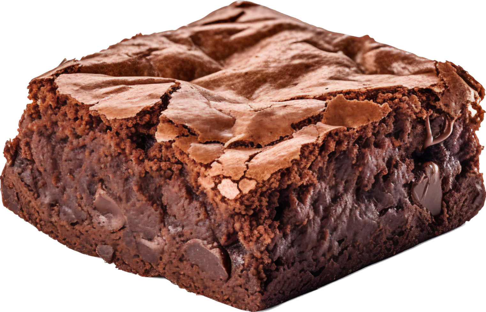

My Brownie Recipe
Introduction
Brownies are a fudgy and warm dessert that almost everyone enjoys. They're a staple in many households and bakeries because they're tasty and super simple to make. It's definitely an all-time favorite in my house.

Ingredients
- 1 cup sugar
- ½ cup butter
- ¾ cocoa
- ½ cup flour
- 2 eggs
- 1 tsp vanilla extract
Instructions
- Preheat the oven to 175°C and grease a baking pan.
- Melt the butter and mix it with the sugar and cocoa in a mixing bowl.
- Beat in the eggs and vanilla until the mixture is smooth.
- Slowly add the flour and stir until well combined.
- Pour the batter into the pan and spread it across evenly.
- Bake for 20-25 minutes or until a toothpick inserted comes out slightly moist.
- Let the brownies cool before cutting and serving.